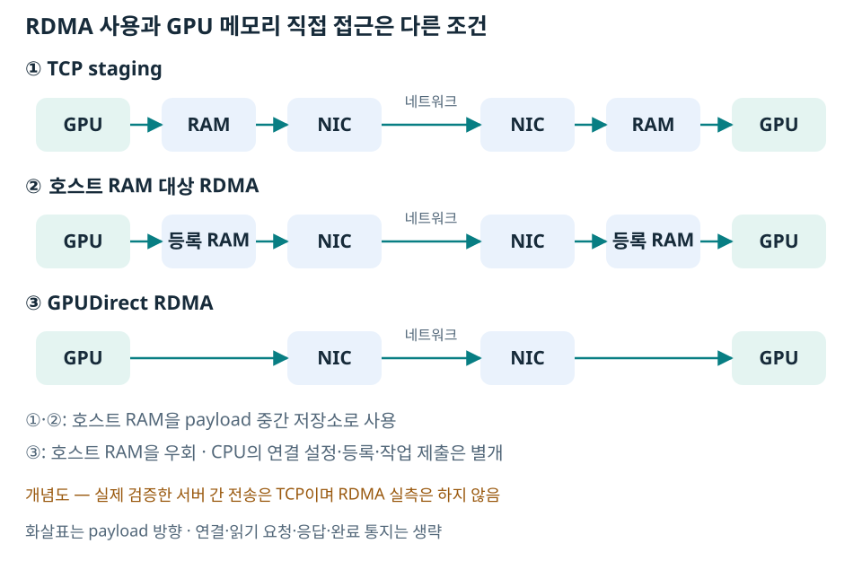

서로 다른 서버의 GPU가 협업하려면 데이터가 네트워크 장치인 NIC를 통과해야 한다. 통신 라이브러리는 이 이동을 요청하는 수단이고, 실제 데이터가 지나가는 경로는 별도로 결정된다.
GPU 데이터를 옮기는 세 가지 경로
아래는 호스트 RAM 사용 여부를 이해하기 위한 개념도다. 화살표는 주된 데이터(payload)의 이동 방향이며, 연결·읽기 요청·응답·완료 통지까지 전부 그린 것은 아니다. Pull에서는 받는 쪽이 반대 방향의 논리적인 읽기를 먼저 시작한다. 실제 구현은 버퍼링·분할·겹침을 추가할 수 있다.

여기서 RAM은 서버의 시스템 메모리인 DRAM이다. CPU의 SRAM 캐시를 반드시 거쳐야 한다는 뜻이 아니다. 반대로 GPU-direct라고 CPU가 완전히 없어지는 것도 아니다. 연결 설정, 메모리 등록, 작업 제출 등의 제어 작업에는 CPU가 관여할 수 있다.
RDMA(Remote Direct Memory Access)는 원격 메모리 접근을 지원하는 기술 범주다. GPU 전용 기술이 아니며 호스트 RAM에도 사용한다. GPUDirect RDMA는 호환되는 NVIDIA GPU와 NIC 사이의 직접 메모리 접근을 제공하는 기술이다. RDMA 사용 여부와 GPU 메모리 직접 접근 여부는 별개의 확인 항목이다. NVIDIA GPUDirect RDMA 개요.
TCP와 RDMA는 완전히 같은 수준의 용어는 아니다
TCP는 신뢰성 있는 바이트 스트림을 제공하는 전송 프로토콜이다. RDMA는 등록한 원격 메모리에 접근하는 기능·통신 모델이다. RDMA를 구현하는 네트워크에는 InfiniBand, RoCE 등이 있고, TCP 위에서 RDMA를 구현하는 iWARP도 있다. 따라서 모든 RDMA가 TCP와 배타적이라고 정의하면 부정확하다. IETF의 RDMA 프로토콜 설명.
이 문서의 실험에서 ‘TCP와 RDMA의 구분’은 NCCL Socket·UCX tcp 경로인가, RDMA 장치를 사용하는 경로인가라는 의미다. 측정은 전자만 수행했다.
RoCE는 Ethernet 위에서 RDMA를 제공하는 방식이다. 특히 RoCEv2는 UDP/IP로 RDMA 패킷을 운반하므로 ‘Ethernet 케이블을 사용한다’는 이유만으로 일반 TCP라고 판단할 수 없다. InfiniBand는 별도의 네트워크 fabric을 사용한다. 애플리케이션의 전송 방식과 밑의 네트워크 종류를 나눠 봐야 한다. NVIDIA의 RoCE 설명.
같은 호스트의 P2P·SHM과 연결해서 이해하기
같은 호스트에서는 GPU 메모리를 직접 접근하는 P2P가 가능할 수 있다. 그 물리 연결은 PCIe일 수도 NVLink일 수도 있다. NCCL의 SHM 경로는 호스트 공유 메모리를 사용한다. 서버가 달라지면 한쪽의 SHM을 상대 서버가 같은 로컬 공유 메모리처럼 열 수 없으므로 네트워크 구간이 추가된다.
같은 호스트라는 사실만으로 P2P 지원이 보장되지 않는다. 하드웨어 토폴로지, 가상화·격리, 드라이버 조건도 맞아야 한다. 연결 지원과 실제 선택된 경로는 로그 판정 문서에서 나눈다.
실제 경로는 실행에서 확인한다
A40 두 서버에서는 NCCL NET/Socket과 UCX tcp/podnet1이 관측됐다. RDMA나 GPUDirect RDMA의 성능 비교는 수행하지 않았다. 다른 GPU 제조사와의 통신 가능성은 호환 범위에 별도로 정리했다.
주소만으로 상대 메모리를 읽을 수 있는 것은 아니다. 전송할 메모리를 준비하고 접근 정보를 교환하는 과정은 상대 메모리를 찾아 읽기로 이어진다.